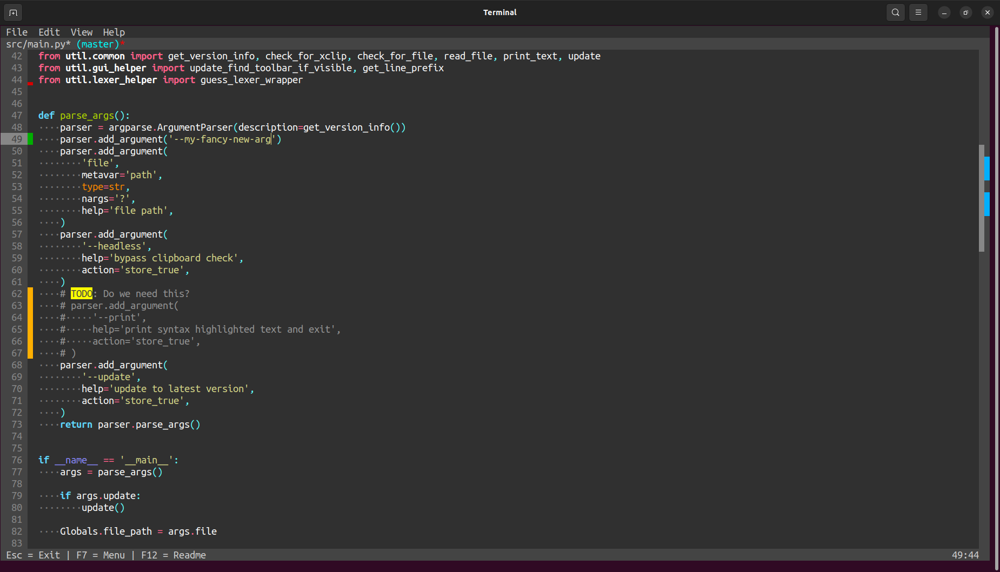
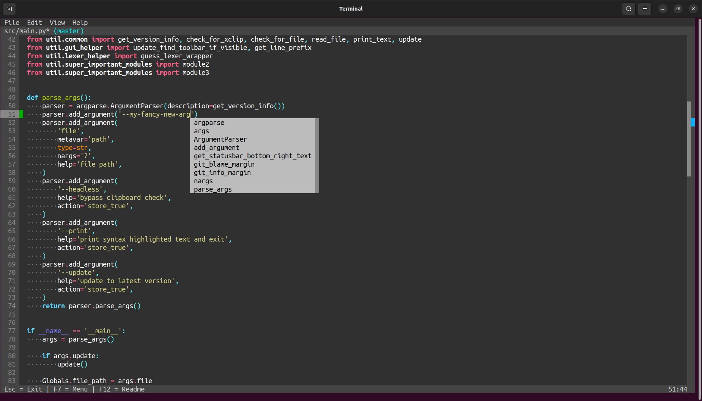
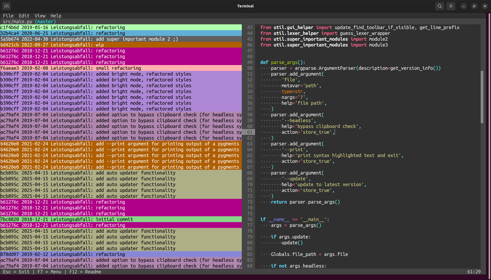
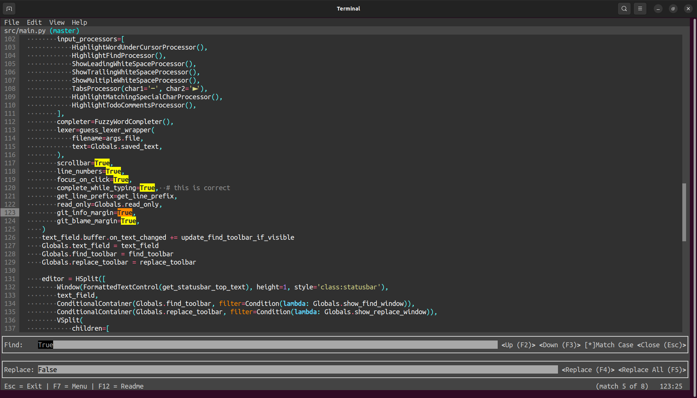
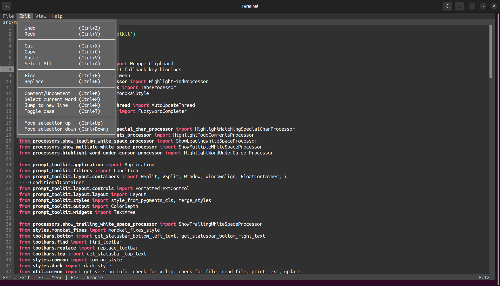
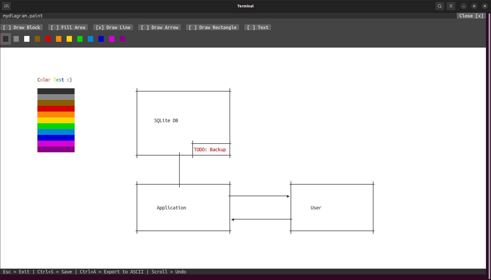

affe
a user-friendly text editor
Full mouse support
Scrolling, clicking, text selection

git integration
Inline git diff and git minimap

Autocompletion
Fuzzy autocompletion triggered by Ctrl + Tab

Inline git blame
Colored commits show code changes

Find & Replace
Powerful find & replace functionality

Keyboard shortcuts
Familiar keyboard shortcuts for text editing & navigation

Get creative
Draw some diagrams: affe <file>.paint
Download
Current version
Binaries
Installation via command line
Linux (x86-64):
curl -sS https://affe.sh/linux | sh
Experimental: Git Bash for Windows (x86-64):
curl -sS https://affe.sh/windows | sh
Source code
What is affe?
"A terminal-based editor enhanced with some fancy features."
affe is an acronym for a full-fledged editor.